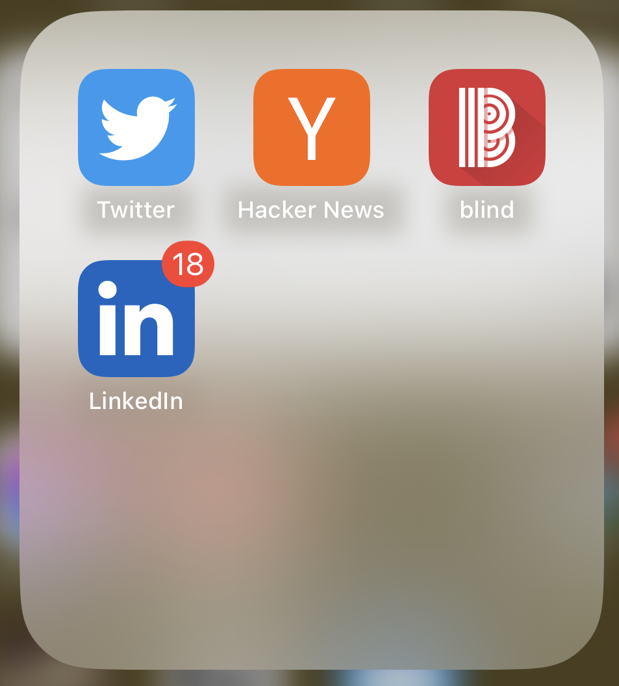

I wanted to talk a little about how I spend my spare time, and how I feel like I've restructured it to help me along in my journey to be a better software engineer.
I will preface by saying what we sometimes catch ourselves saying when we're coding: "it works on my machine!". Basically, what I'm documenting here is stuff that helped me feel like I was learning more and being more productive with my downtime, but that doesn't mean it'll work for you! Think of this like a self-help book, either you'll read it and love it and use all the tips, or you'll realize that none of these will really work for you. Either way, enjoy reading my thoughts.
Ok, if you're like me, your general feelings towards engineering blogs put out by companies were that of wary curiousity. At first, I would run into google search results recommending engineering blogs from companies in ways that made me think "oh great, it'll start as a tutorial, but just end up trying to sell me on the product by the end of it, barf." For example, suppose I wanted to send an email in Python, and the first thing I saw was an eng blog by SendGrid (Twilio). My first thought would be, "Oh, I'm just cleverly being sold sendgrid. Away with you." But this was a pretty awful, cynical way to look at these things. I'm not saying every single one isn't a thinly veiled pitch for the latest shiny product that a company has put out, but most blogs are deeper than that!
I started thinking more favorably about engineering blogs after internal discussions at Athelas about creating one. We were talking about ways to level up our engineering org, and one of the topics that popped up was, "let's make a nice blog where we talk about some of the cool things our eng team is working on, so that we can show the world what eng @ athelas is up to!". What I also caught on to was that at the footer of every blog, we'd have some section that sounded like, "If this sounds neat to you, send me an email or apply to our careers website! :)". In addition to being a cool showcase of our eng work, it also served as a powerful recruiting function.
Seeing our own company do it was enough to get me to start "trusting" them more- but I soon learned that there were some eng blogs that I really enjoyed reading, and those were mostly the eng blogs that told some sort of story, framed around a technical issue at the company that was solved, and also discussed technology in a fairly approachable way to a junior fullstack engineer. There were certainly some blogs I got frustrated with in the middle, as I was googling every other term mentioned (many DL and ML blog posts which tended to get into the weeds felt like this), but there were also plenty where I felt like I was really learning a lot, or bolstering knowledge I had accrued already.
In terms of actually moving on these, and rain-dishing the knowledge stored in these blogs during my busy days, I've devised a bit of an odd solution. When I'm at the gym- I know, sounds like the worst kind of tech bro- and I'm in between sets, I've started to cultivate this habit of thinking of a 'cool' company (most recent example: Ramp) and going to their engineering blog page. Then, I click on a post that interests me and I start reading in between sets! By the time my workout is done, I'll have gotten through 2-3 engineering blogs, and now have something to think about as I do my cooldown stuff.
So, I may have been guilty of making fun of some friends for browsing HN in their spare time- but I have to admit, I shamelessly stole this idea from him after I decided to give it a go. :]
The basic idea is that I spent a lot of time before on Reddit. Like, a lot. I'd love to show you my 'screen time' app from back before made the change, but thankfully Apple doesn't keep my history that far back. I knew I needed a change after seeing that, and I decided to do something a bit interesting.
I needed a way to generate as much content for myself as possible that would fill my downtime (while still limiting it), but wanted to make that content helpful for my career or my knowledge. In other words, I wanted it to be 'enriching'. I also wanted to not necessarily quit the biggest grabbers of my attention (YouTube, Instagram, Reddit), but instead sideline them and set limits, so that I would be more encouraged to use the 'better' apps.
Pretty impressive, right? (/s) Let me explain the lineup. Hackernews and Blind are good to go out of the box. Hackernews is mostly just posts that I categorize as "I could send this link to a senior eng on my team and they'd think I'm a smart, quirky fellow who's in the know", and so I generally have no additional thoughts on the platform. I've been keeping a list on Notion that I call "Aki's HN greatest hits", where I'll save posts manually if I find them especially neat. Now, let's talk about Blind. I'm aware that Blind gets a bad rap in some circles, but I actually find the candid nature with which people talk about situations at their companies to be a little refreshing. I've seen people be weirdly candid on Blind (maybe due to the anonymity) in ways that have me think more deeply about where I want to work (e.g. not being able to afford a house in the bay area even after becoming a staff eng, talking about health issues as a result of overwork, etc). Although some parts of Blind definitely feel a little bristly for me, I'm thankful for the platform and the honesty that comes with it. As with most other social media- if a post upsets me, I just click away from it and try not to let it mess with my headspace.
Twitter and LinkedIn are the ones which don't have 'batteries included', so to speak. The content is very much tailored to you, and so you have to go out of your way to follow stuff that you like. First, let's talk about Twitter- I stayed away from it for the longest time, after hearing about friends having crass mudslinging exchanges, or seeing blatant disinformation rocket to the top of feeds. But, I like what my Twitter looks like now, after hours of careful curation. I've taken care to follow people talking only about what I want to hear- that is: neat little projects that people are hacking on, software engineering tips and tricks, and news on in-person meetups in San Francisco. I'm not really interested in arguing with people or starting discourse on the platform myself- would much rather take in the nice things that it has to offer. And I think more people should be okay with that. LinkedIn is a much more tame beast- I will say that I've heard some friends complain about the hyper-corporate nature of posts on there, and my response is, it's networking. Take it at face value. Personally, I like to follow 'cool' companies and specific engineers that I admire, to see what they are reading about and liking on the platform. Since I don't go out of my way to read other business news, I tend to get some of my bulletins from here as well, which is always great.